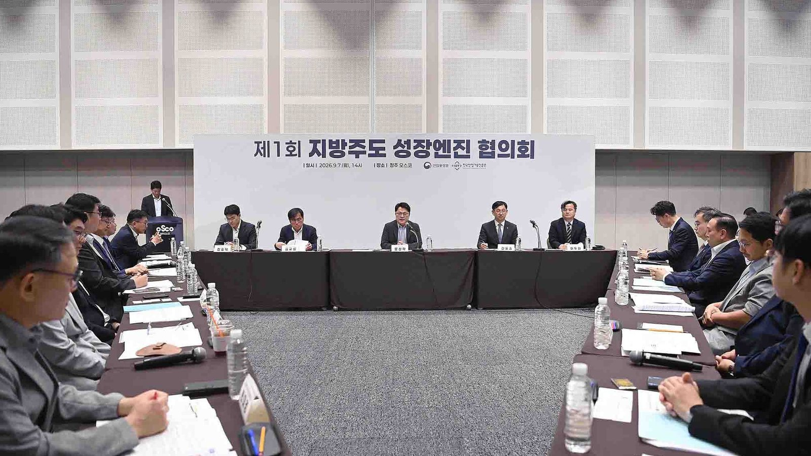
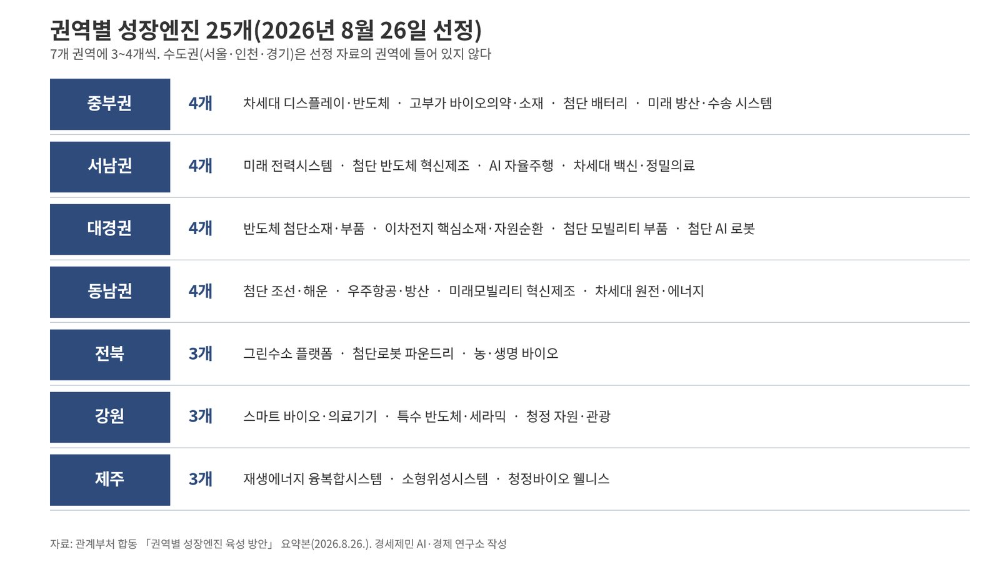
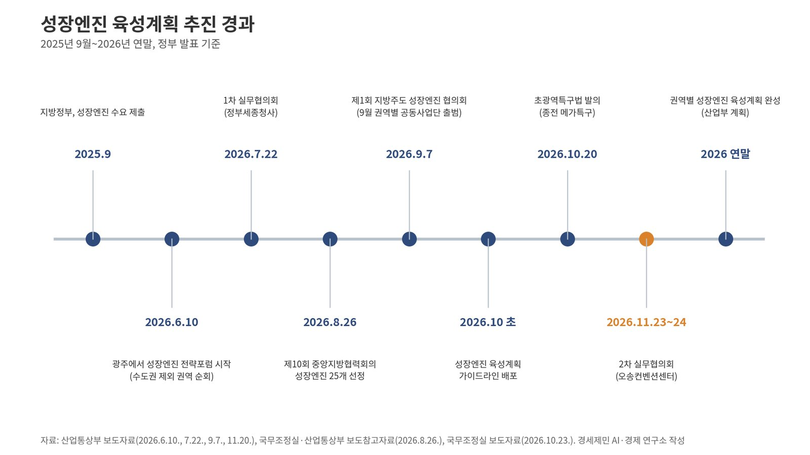
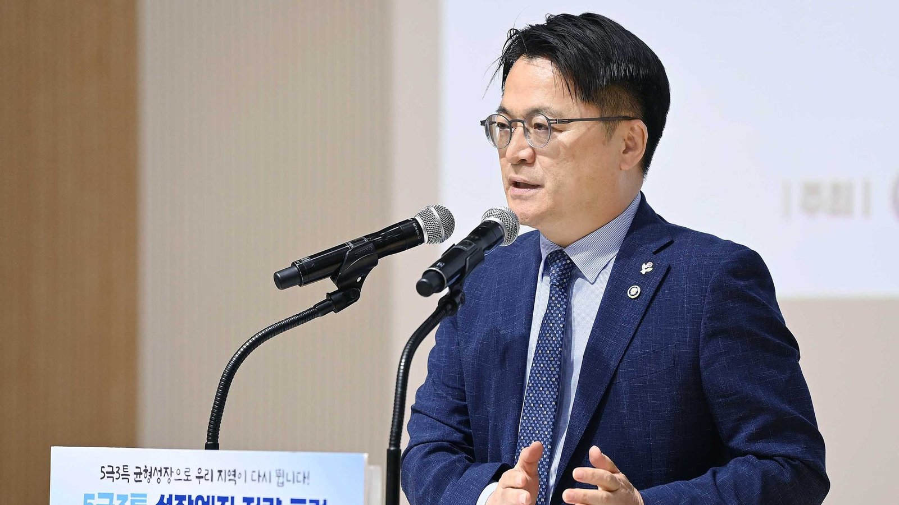
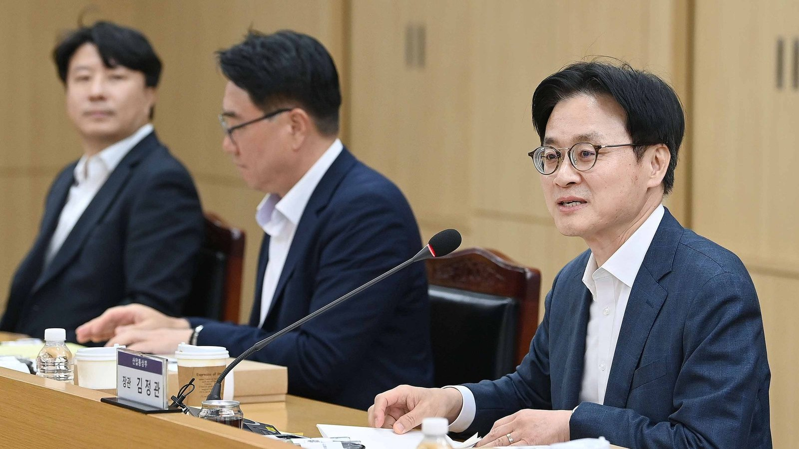

성장엔진 25개 육성계획 2차 협의회, 7개 권역 밖 수도권
산업부 23~24일 오송서 권역별 협의
인천은 서울·경기와 함께 수도권 1극
AI경제저널=김갑봉 기자 | 산업통상부가 11월 23일부터 24일까지 이틀 일정으로 오송컨벤션센터에서 「성장엔진 육성계획 2차 실무협의회」를 열었다고 밝혔다. 지난 8월 26일 제10회 중앙지방협력회의에서 선정한 성장엔진 25개의 육성계획을 7개 권역별로 논의하려고 마련한 자리다. 산업부는 11월 20일 배포하고 23일 누리집에 올린 보도자료에서 이 내용을 알렸다.
보도자료에 붙은 상세 일정(안)에는 첫날 중부권·대경권·강원권·전북권, 이튿날 동남권·서남권·제주권이 올라 있다. 이 일곱 권역에 인천이 속한 수도권은 없다.

1. 25개 성장엔진, 권역별 3~4개
산업부와 국무조정실이 8월 26일 낸 자료를 보면 성장엔진은 권역별로 3~4개씩 모두 25개다(연구소 계산). 중부권·서남권·대경권·동남권이 4개씩이고 전북·강원·제주가 3개씩이다. AI산업은 모든 권역에 공통으로 적용한다.
권역별 성장엔진의 이름은 도표에 정리했다. 중부권은 첨단 배터리, 서남권은 AI 자율주행, 동남권은 우주항공·방산, 전북은 그린수소 플랫폼, 강원은 스마트 바이오·의료기기, 제주는 소형위성시스템을 골랐다.
선정 기준은 메가프로젝트 기업투자, 지역 강점, 성장 잠재력, 국가 전략과 맞는 정도(정합성)다. 산업부는 2025년 9월 지방정부가 수요를 낸 뒤 지방정부와 100여회 협의하고 기업 600여개, 지역 전문가 등의 의견을 수렴했다고 밝혔다.

2. 2차 협의회, 연말까지 권역별 성장엔진 완성
산업부는 육성계획을 25개 성장엔진별로 앵커기업의 실제 지방투자와 범정부 지원정책을 제시하는 실행 로드맵이라고 설명했다. 권역별 비전과 목표, 앵커기업의 투자 이행에 필요한 재정·금융·세제·인재·R&D·인프라 지원수단, 규제특례와 제도개선 과제를 담을 예정이다.
계획은 지난 9월 출범한 권역별 공동사업단이 세우고 있다. 공동사업단은 지방정부, 지역산업진흥원, 지역혁신기관을 중심으로 7개 권역마다 꾸렸다.
산업부는 7월 22일 정부세종청사에서 「성장엔진 육성계획 실무협의회」를 열어 지방정부에 작성 가이드라인을 설명했고, 10월 초 「성장엔진 육성계획 가이드라인」을 배포한 뒤 실무 작업을 이어 왔다. 산업부는 7월 보도자료에서 육성계획을 바탕으로 중앙·지방정부, 앵커기업, 지역혁신기관이 「초광역특별협약」 체결을 추진할 예정이라고 밝혔다.
산업부는 이번 2차 협의회에 산업부와 7개 권역 지방정부, 공동사업단, 자문단이 참여했다고 밝혔다. 자문단은 반도체·이차전지·로봇 등 주요 성장엔진 산업의 전문가와 산업연구원·국토연구원의 지역·입지 전문가 50여명으로 이뤄졌다.
산업부 설명으로는 산업별 전문가가 앵커기업의 대규모 지방투자를 바탕으로 권역 안 성장엔진 산업생태계를 구축하는 방안과 협력기업을 아우르는 공급망·밸류체인 조성 방안을 논의했다. 지역·입지 전문가는 지역대학·연구소·지역혁신기관의 산·학·연 연계 방안과 산업인프라·입지계획을 집중 토론했다.
앵커기업 투자가 인재·기업 유치와 거점 발전, 추가 투자 유치로 이어지는 선순환 구조를 육성계획에 담는 방안도 집중 논의했다는 설명이다. 이 내용은 협의회에 앞서 11월 20일 배포한 보도자료에 실렸고, 24일 진행 결과를 따로 밝힌 자료는 11월 26일 현재 나오지 않았다.
산업부 이재석 지역경제정책관은 보도자료에서 "성장엔진 선정이 실제 기업의 지방투자와 지역 일자리로 이어지려면 실행 가능한 구체적 육성계획이 뒷받침되어야 한다"고 밝혔다. 산업부는 협의회 결과를 토대로 연말까지 지방정부·공동사업단·자문단과 함께 권역별 성장엔진을 완성해 나간다는 계획이다.

3. 7대 패키지, 재정·금융·세제·제도
투자지원의 틀은 8월 26일 관계부처 합동 「권역별 성장엔진 육성 방안」 요약본에 있다. 재정·금융·세제·제도·기술·인재·인프라 일곱 갈래이고, 원칙은 "수도권에서 더 멀수록 두텁게"다.
재정은 성장엔진 특별보조금을 새로 도입해 대규모 투자를 "국내 최고 수준"으로 협상해 지원한다. 요약본은 지급 규모를 적지 않았다. 협상에는 고용과 산업생태계 같은 지역경제 기여도, R&D·인력 지원을 종합해 반영한다.
금융은 국민성장펀드의 40%를 지방에 투자하고, 1조원 성장엔진 우대보증을 둔다. 지방에 공급하는 정책금융은 2028년 연 164조원으로 늘린다. 금융위원회가 6월 대전 「정책금융 동행」 행사 보도자료와 7월 15일 업무보고에서 밝힌 목표이고, 요약본에는 164조원+α로 실렸다.
세제는 R&D비용·통합투자·국내생산 세액공제에 지역별 계수를 적용해 지방기업이 지역별로 최대 50%까지 추가 공제를 받는다.
제도는 특구 지정이다. 투자 인허가를 일괄 처리하고, 지연되면 60일 안에 처리한다. 요약본은 이를 「메가특구」라 부르며 메가특구법을 신속히 발의하겠다는 일정을 적었다.
국무조정실은 10월 23일 보도자료에서 법정 용어가 「초광역권전략산업특구」(약칭 초광역특구)라고 밝혔다. 지방정부와 기업이 특구계획을 신청하면 위원회 심의·의결과 국무총리 승인을 거쳐 산업부 장관이 특구를 지정하는 절차다. 국무조정실은 2027년 상반기에 각 권역에 특구를 지정할 수 있도록 절차를 추진한다고 밝혔다.
국회 의안정보시스템을 보면 박상혁 의원 등 의원 24명이 10월 20일 초광역특구법안을 발의했고, 이 법안은 의결결과 없이 계류 중이다(11월 26일 확인). 국회는 11월 5일 본회의에서 초광역권전략산업특구 특별위원회 구성결의안을 의결했다.
산업부는 9월 7일 오송 오스코에서 열린 제1회 「지방주도 성장엔진 협의회」에서 이 패키지를 발표했다. 13개 지방정부가 참석했고, 문신학 차관은 "투자 전 과정에 걸쳐 중앙정부가 모든 정책적 지원을 아끼지 않을 계획"이라고 밝혔다.
동남권 성장엔진인 우주항공·방산에서는 11월 23일 경남도청에서 투자협약이 이어졌다. 산업부와 경상남도, 진주시, 사천시, 한국항공우주산업(KAI)이 1조5000억원 규모 협약을 체결했다. KAI는 2027년부터 2031년까지 차세대 민항기 기술개발과 항공부품 국산화에 투자할 계획이다.
같은 날 경상남도와 한국무역보험공사, 방산 3사, 은행 3곳은 방산 상생 무역금융 협약을 맺었다. 방산 3사와 은행이 584억원 재원을 마련하고, 무역보험공사가 협력기업에 약 8200억원 규모 우대보증을 제공한다고 산업부는 밝혔다.
4. 수도권 인천, 권역 밖의 1극
5극3특에서 5극은 수도권, 충청권, 광주·전남권, 대구·경북권, 부산·울산·경남권이고 3특은 강원·전북·제주다. 서울대 국가미래전략원 정책제안의 설명이다. 수도권도 5극의 한 축이지만, 정부가 선정한 성장엔진 25개는 모두 수도권 밖 7개 권역에 있다. 수도권 몫의 성장엔진은 8월 선정 자료에 나오지 않는다.
산업부가 6월 10일 광주에서 연 「5극3특 성장엔진 전략포럼」 보도자료도 "수도권을 제외한 5극3특 각 권역을 순회하며 포럼을 개최할 예정"이라고 적었다.

인천시 경제정책과가 7월 29일 누리집에 올린 「인천 경제산업 이슈 & 트렌드」 제26-07호(2026년 7월 27일)는 정부 전략이 인천을 서울·경기와 함께 수도권(1극)으로 분류했다고 적었다. 인천연구원 인천경제동향분석센터가 쓴 이 자료는 수도권도 비수도권처럼 광역권 역할을 하려면 국가의 재정·제도 지원이 함께 필요하다고 짚었다.
인천에 필요한 지원으로는 수도권 관문 도시 위상 강화, 첨단산업 도시 인프라 구축, 중심 거점에서 떨어진 도서·접경지역 활성화, 광역·생활권 교통 인프라 개선을 들었다. 7월 시점에 수도권 지방자치단체 간 논의가 활발하지 않다고도 적었다.
서울대 국가미래전략원 정책제안은 수도권의 지역내총생산 비중이 2014년 49.6%에서 2023년 52.3%로 올랐고, 2020년 수도권 인구가 비수도권을 처음 넘어섰다고 정리했다.
5. 연구가 짚은 한계, 지방의 목소리
김의준 서울대 교수와 김슬기 국토연구원 부연구위원은 수도권을 뺀 4개 초광역권과 3개 특별자치도를 대상으로 시뮬레이션을 했다.
2025년 국내총생산의 1%를 교통 인프라에 투자한다고 가정한 30년 추정이다. 연구진은 연평균 0.18%의 성장 효과가 나고 30년차에는 0.39%에 이른다고 추산했다(연구진 표기). 지역 격차는 현재보다 0.33% 완화된다는 결과다.
연구진은 분석을 교통 인프라 투자에 한정했다고 밝혔다. 공간 불균형이 국가의 장기 성장 잠재력을 제약한다는 우려를 뒷받침할 이론적·실증적 근거도 아직 충분하지 않다고 적었다.
두 연구자는 강원·전북·제주에 재정 지원과 지역 여건을 반영한 규제 완화가 따르지 않으면 광역화의 수혜에서 빠진 "지역 사막"이 될 위험이 있다고 짚었다.
서울 경제는 비수도권 광역화 유형과 무관하게 일정 수준 성장을 유지할 수 있어, 수도권 집중 완화는 비수도권 광역화만으로 이루기 어렵다는 분석도 냈다.
산업부 요약본은 강원·전북·제주에도 성장엔진을 3개씩 배정했다. 기업의 투자 이행과 애로는 권역별 성장엔진 추진단이 1대1로 지원한다고 적었다. 김정관 산업부 장관은 10월 14일 춘천바이오산업진흥원에서 「강원권 성장엔진 투자기업 간담회」를 주재하고 기업의 투자 진행 상황과 현장 애로를 들었다.

지방 쪽에서는 6월 10일 광주 포럼에서 김영문 광주광역시 문화경제부시장이 앞으로도 중앙정부와 지방정부 사이 의사소통과 협력을 강화하겠다고 밝혔다. 9월 7일 협의회에서 13개 지방정부는 권역이 자생적으로 산업생태계를 구축하겠다는 뜻을 밝혔다고 산업부는 전했다.
기업 쪽에서는 광주 포럼에 참석한 기아 김희삼 상무가 광주공장 투자를 계획 중이라며 서남권 자동차 산업 생태계 강화를 위한 정부 차원의 정책적·재정적 지원이 필요하다고 밝혔다.
참고문헌
공식 발표자료
- 「권역별 성장엔진, 투자지원 액션플랜 만든다」(보도자료), 산업통상부, 2026.11.20. 배포(누리집 2026.11.23. 등록), https://www.motir.go.kr/kor/article/ATCL3f49a5a8c/172432/view
- 「1.5조원 투자 + 8,200억원 상생금융으로 우주항공·방산 동남권 지역거점 육성」(보도자료), 산업통상부, 2026.11.23., https://www.motir.go.kr/kor/article/ATCL3f49a5a8c/172438/view
- 「“지방 주도 성장으로 국토대전환” 본격 시동」(보도참고자료), 국무조정실·산업통상부, 2026.8.26., https://www.motir.go.kr/kor/article/ATCL3f49a5a8c/172132/view
- 「권역별 성장엔진 육성계획 마련한다」(보도자료), 산업통상부, 2026.7.22., https://www.motir.go.kr/kor/article/ATCL3f49a5a8c/172044/view
- 「지역기업 지원을 위해 6개 정책금융기관이 함께 현장으로 찾아갑니다. - 「정책금융 동행」 대전에서 첫 개최」(보도자료), 금융위원회, 2026.6.15. 게시, https://www.fsc.go.kr/no010101/87092
- 「5극3특 성장엔진 시동건다! 「지방주도 성장엔진 협의회」 출범」(보도자료), 산업통상부, 2026.9.7., https://www.motir.go.kr/kor/article/ATCL3f49a5a8c/172162/view
- 「“5극3특 성장엔진 청사진, 그린다”」(보도자료), 산업통상부, 2026.6.10., https://www.motir.go.kr/kor/article/ATCL3f49a5a8c/171911/view
- 「규제합리화위원회 제2차 전체회의」(보도자료), 국무조정실, 2026.10.23., https://www.korea.kr/briefing/pressReleaseView.do?newsId=156786291
연구보고서·논문
- 「3대 메가프로젝트 연계 권역별 성장엔진 육성 방안(요약본)」(관계부처 합동 안건), 2026.8.26., https://www.motir.go.kr/attach/down/095a2dda9c864e1d90d751f7668a1117/249374d155461a39eee61f2ffe68d5b9/007d741c7b5aa2f9ec3e7211ce70c950
- 「국민성장펀드 200조로 확대…우주항공 등 미래전략산업까지 지원」(정책뉴스, 금융위원회 업무보고), 대한민국 정책브리핑, 2026.7.15., https://www.korea.kr/news/policyNewsView.do?newsId=148968206
- 「지방주도성장을 위한 초광역권전략산업특구 지정 및 운영에 관한 특별법안」(의안번호 2221973, 박상혁의원 등 24인, 2026.10.20.), 국회 의안정보시스템, 2026.11.26. 열람, https://likms.assembly.go.kr/bill/
- 「강원권 성장엔진 투자기업 간담회」(포토뉴스), 산업통상부, 2026.10.14., https://www.motir.go.kr/kor/article/ATCLb41cda0c5/29276/view
- 김의준·김슬기, 「지역 공진화를 위한 공간 전략: 5극3특 전략은 성장을 키우지만 균형을 보장하지 않는다」(IFS 국가 정책 제안 제59호), 서울대학교 국가미래전략원, 2026., https://ifs.snu.ac.kr/clusterfile/524/59_%EA%B5%AD%EA%B0%80%EB%AF%B8%EB%9E%98%EC%A0%84%EB%9E%B5%EC%9B%90_%EC%A7%80%EC%97%AD%20%EA%B3%B5%EC%A7%84%ED%99%94%EB%A5%BC%20%EC%9C%84%ED%95%9C%20%EA%B3%B5%EA%B0%84%20%EC%A0%84%EB%9E%B5_5%EA%B7%B93%ED%8A%B9%20%EC%A0%84%EB%9E%B5%EC%9D%80%20%EC%84%B1%EC%9E%A5%EC%9D%84%20%ED%82%A4%EC%9A%B0%EC%A7%80%EB%A7%8C%20%EA%B7%A0%ED%98%95%EC%9D%84%20%EB%B3%B4%EC%9E%A5%ED%95%98%EC%A7%80%20%EC%95%8A%EB%8A%94%EB%8B%A4.pdf
- 「인천 경제산업 이슈 & 트렌드 제26-07호(2026.07.27.) - ‘5극 3특 국가균형성장 추진전략’과 인천시 시사점」, 인천광역시 경제정책과(인천연구원 인천경제동향분석센터 작성), 2026.7.29. 게시, https://www.incheon.go.kr/eco/ECO050401/3083584
사진 출처
- [사진1] 산업통상부 포토뉴스 「제1회 지방주도 성장엔진 협의회 개최」(2026.9.8. 게시, 행사 2026.9.7., 자료사진)
- [사진2] 경세제민 AI·경제 연구소 작성 도표. 자료 관계부처 합동 「권역별 성장엔진 육성 방안」 요약본(2026.8.26.)
- [사진3] 경세제민 AI·경제 연구소 작성 도표. 자료 산업통상부 보도자료(2026.6.10., 7.22., 9.7., 11.20.), 국무조정실·산업통상부 보도참고자료(2026.8.26.), 국무조정실 보도자료(2026.10.23.)
- [사진4] 산업통상부 포토뉴스 「5극3특 성장엔진 전략포럼 개최」(2026.6.10.)
- [사진5] 산업통상부 포토뉴스 「강원권 성장엔진 투자기업 간담회」(2026.10.14.)
※ 이 기사는 인공지능기자 위민아이(Wemin_AI)와 협력해 작성했습니다.
관련기사
- 지방 재정자주도 57.27%, 2016년 이후 최저
- 3분기 수출 증가분 87% 경기·충남, 소매판매는 13개 시도 감소
- 인천 세 자치구 재정자립도 12~16%, 구청장 「재정위기」
- 지역 중소·중견기업 보증부대출 1차 3조7400억원
저작권자 © AI경제저널 무단전재 및 재배포, AI학습 및 활용 금지